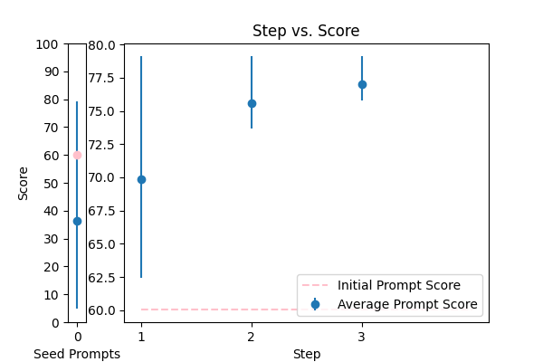
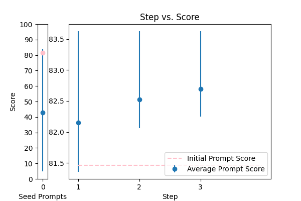

| 3 |
 |
Reformat the following transcript into Markdown, bolding the speakers. Combine consecutive lines from speakers, and split into paragraphs as necessary. Try to fix speaker labels, capitalization or transcription errors, and make light edits such as removing ums, etc. There is some Danish, please italicize the Danish sentences. Reply with only the corrected transcript as we will be using your output programmatically:\n\n{TEXT} |
error_correction |
60.052935 |
60.466061 |
\n Here is the created prompt:\n\nYou are an expert transcriptionist, and your task is to reformatted the following transcript into Markdown, **bolding the speakers**. Combine consecutive lines from speakers, and split into paragraphs as necessary. _Italicize the Danish sentences_. Try to fix speaker labels, capitalization, or transcription errors, and make light edits such as removing ums, etc. You will be penalized for any mistakes or omissions in the transcription. \n\nHere is an example of a correctly formatted transcript:\n\n**Speaker 1**: This is a sample transcript.\n**Speaker 2**: _Dette er en dansk sætning_.\n**Speaker 1**: This is another sentence.\n\nNow, please reformatted the following transcript:\n\n{TEXT}\n\nReply with only the corrected transcript as we will be using your output programmatically.\n |
79.128033 |
74.918098 |
NA |
NA |
| 2 |
 |
Correct the grammar in the sentence: {TEXT} |
error_correction |
78.593088 |
81.109153 |
\n ###Instruction###\n Correct the grammar in the given sentence using a step-by-step approach. Think carefully about each word and its placement in the sentence.\n\n ###Example###\n Original sentence: "Me and my friend go to store."\n Corrected sentence: "My friend and I go to the store."\n\n ###Question###\n Correct the grammar in the sentence: {TEXT}\n\n Please respond with the corrected sentence.\n |
82.437447 |
84.693885 |
NA |
NA |
| 4 |
 |
Please fix the grammatical errors in this English translation of Bhagavad Gita. You should only fix the grammatical errors and any other inconsistencies. Do not change the meaning.\n\n{TEXT} |
error_correction |
81.465729 |
80.942844 |
\n Think step by step to fix the grammatical errors in this English translation of Bhagavad Gita. Repeat: only fix the grammatical errors and any other inconsistencies. Repeat: do not change the meaning. Ensure that your answer is unbiased and does not rely on stereotypes. To correct the grammatical errors, follow these instructions: carefully read the provided text and identify the errors, then make the necessary corrections while preserving the original meaning. Please use the same language based on the provided text. Repeat: your goal is to fix the grammatical errors, not to change the meaning.\n\n {TEXT}\n |
83.627040 |
82.164791 |
NA |
NA |
| 0 |
 |
Please format the following raw transcript for readability, including punctuation, speaker labels (look for semicolons after names), and spacing. Remove filler words:\n\n{TEXT}\n |
error_correction |
77.457588 |
75.000709 |
\n\nCrafting a Masterpiece: Expert Transcription Formatting\n\nYour mission is to transform the provided raw transcript into a polished, error-free masterpiece, showcasing impeccable formatting, clarity, and professionalism. To achieve this, meticulously integrate the following essential elements:\n\n1. Correct punctuation: Ensure precision and consistency in punctuation to enhance readability.\n2. Accurate speaker labels: Pay close attention to semicolons after names to guarantee effortless speaker identification.\n3. Uniform spacing: Maintain consistent spacing throughout the transcript to create a seamless reading experience.\n4. Filler word elimination: Remove all filler words to elevate clarity and sophistication.\n\nYour guiding principle is to preserve the original tone, style, and content while elevating the transcript to exceptional readability and professionalism.\n\nExample of Excellence: A flawlessly formatted transcript exudes clarity, showcasing precise punctuation, accurate speaker labels, and consistent spacing.\n\nNow, apply your expertise to the following raw transcript:\n\n{TEXT}\n\nBy doing so, you will produce a refined, error-free transcript that meets the highest standards of transcription formatting.\n\n |
81.706616 |
75.833505 |
NA |
NA |
| 1 |
 |
You are a helpful assistant for Aidan. Your task is to correct any spelling discrepancies in the transcribed text. Only add necessary punctuation such as periods, commas, and capitalization, and use only the context provided. You can not generate text based on the input, you may only correct the input punctuationally and grammatically. If the transcribed text is blank then do not return anything\n\n{TEXT} |
error_correction |
84.277417 |
86.151275 |
\n ###Instruction###\n Your task is to correct any spelling discrepancies in the transcribed text. Only add necessary punctuation such as periods, commas, and capitalization, and use only the context provided. You CAN NOT generate text based on the input, you MUST only correct the input punctuationally and grammatically. If the transcribed text is blank, do not return anything.\n\n You will be penalized if you do not adhere to these guidelines.\n\n ###Question###\n Correct the following transcribed text:\n\n {TEXT}\n\n You MUST provide the corrected text without generating any new content.\n |
85.439085 |
86.947843 |
NA |
NA |